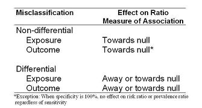
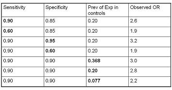
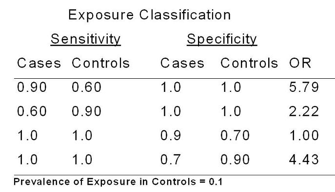

Measurement Bias
Lead Author(s): Jeff Martin, MD
Technical Definition: It is the bias, or deviation from the truth, that it is caused when any measurement collected about or from subjects is not completely valid (i.e., not completely accurate). Inaccuracy in the measurement of any kind of variable, be it an exposure variable, an outcome variable, or a confounder variable can lead to measurement bias.
AKA: What are the other terms you might find for measurement bias? Measurement bias is also known as misclassification bias, information bias, or identification bias. Misclassification bias is a good term because misclassification of a variable is the immediate result of an error in measurement.
Non-Differential Misclassification - Bias Towards the Null Hypothesis
As shown in the table below, the effect of non-differential misclassification is predictably always towards the null hypothesis, in other words an attenuation of the measure of association.
- The exception to this comes when specificity is 100%, there is no bias incurred with imperfect sensitivity of the outcome measurement when risk ratios or prevalence ratios are being estimated.

The effects of differential misclassification can go in either direction and depend very much on the individual circumstances of the problem. The bias can either be away from or towards the null hypothesis.
Non-Differential Misclassification of Exposure and Outcome Variables
When we are using odds ratios there is a predictable bias towards the null hypothesis for both non-differential misclassification of exposure and outcome.
How common do you think this is?
- Whenever you start to measure something with less than 100% sensitivity and 100% specificity you begin to get biased measures of association towards the null.
- In fact, they will always be towards 1.0 unless the sensitivity and specificity are absolutely atrocious in which case you will begin to reverse direction.
- Because this bias is typically towards the null, it has been called a conservative bias.
But what does conservative really mean?
- After all, the goal in our work is to get at the truth.
- Consider how much underestimation of effects must be occurring in research.
- Or, how many negative studies are truly positive?
- How much does non-differential misclassification add to the confusion in given fields where some studies have positive results and others are negative?
Non-Differential Misclassification of Exposure Variables - Sensitivity
In the imperfect sensitivity example of non-differential misclassification of exposure variables some truly exposed persons are misclassified as unexposed (false negative). Because this happens equally among diseased and non-diseased persons, it is called non-differential misclassification.
The illustrates the effect of non-differential misclassification of exposure in the presence of 2 exposure categories and 70% sensitivity - the bias is towards the null hypothesis in other words, towards 1.0
Non-Differential Misclassification of Exposure Variables - Specificity
In the imperfect specificity example of non-differential misclassification of exposure variables some truly unexposed persons are misclassified as exposed (false positive). Because this happens equally among diseased and non-diseased persons, it is called non-differential misclassification.
This illustrates the effect of non-differential misclassification of exposure because of imperfect specificity in the presence of 2 exposure categories - the bias is towards the null hypothesis , towards 1.0.
Non-Differential Misclassification of Exposure Variables - Imperfect Sensitivity and Specificity
Both imperfect sensitivity and specificity are far more common than imperfect sensitivity or imperfect specificity alone as illustrated in these examples.
A key component affecting the actual sensitivity and specificity of the exposure measurement is the extent of the bias.
Non-Differential Misclassification - Magnitude of Effect of Bias on OR
The table below gives some more examples of what happens with non-differential misclassification of exposure. 
In a scenario where the true Odds Ratio is 4.0, if sensitivity is 90% and specificity is 85% and the prevalence of exposure in the controls is 20%,
Keeping specificity fixed but decreasing sensitivity to 60%
- results in an OR all the way down to 1.9.
If you keep sensitivity fixed at 90% but drop specificity from 95% to 60%, again with true prevalence of exposure in the controls of 20%,
- then the odds ratio will fall from 3.2 to 1.9.
These last three rows illustrate how problems of misclassification are magnified when the prevalence of exposure is smaller.
- In the presence of 90% sensitivity and specificity (the last three rows), note how the bias increases the true prevalence of exposure in the controls falls.
- The observed OR falls from 3.0 to 2.8 to 2.2.
Hence, when the prevalence of exposure is about 8%, even a seemingly very respectable 90% sensitivity and specificity results in an OR of 2.2, much smaller than the true 4.0.
These are graphical examples of bias from Copeland.
Flegal plots the effect of non-differential misclassification of exposure in a cohort study.
Non-Differential Misclassification of Outcome Variables
When the degree of misclassification of outcome is the same in the exposed vs unexposed groups, i.e. independent of exposure, this is called non differential misclassification of outcome.
Flegal plots the effect of non-differential misclassification of outcome and the effect of incidence.
Non-Differential Misclassification of Outcome Variables in a Cohort or Cross-Sectional Study
When we are using odds ratios there is a predictable bias towards the null hypothesis for both non-differential misclassification of exposure and outcome.
Differential Misclassification of Exposure and Outcome Variables
The table below shows some examples of what can happen in the presence of differential misclassification of exposure.

Assume that we are looking at an odds ratio in a case-control study and that the true odds ratio is 3.9 and that the prevalence of exposure in the controls is 10%.
- If specificity of the exposure measurement is perfect, we will get entirely different patterns of bias depending upon the pattern of differential sensitivity in the exposure measurement.
- If measurement of the exposure in controls is less sensitive than in the cases, you can see how this will result in an overestimate of the association under study.
- In contrast, if the exposure measurement is more sensitive in the controls, this will lead to a underestimate of the odds ratio, here 2.2.
The bottom line is that unlike non-differential misclassification where the bias is predictably towards the null hypothesis, in the presence of differential misclassification anything can happen with biases both towards and away from the null hypothesis. It all depends upon the individual situation.
An example of differential misclassification of the exposure variables can be seen in the Nurses Health Study of recall bias in retrospective assessment of melanoma risk.
Examples of differential exposure during pregnancy and congential malformations also provide further evidence of misclassification bias.
Measurement Bias in Analytic Studies
In the face of systematic error in an interval scale measurement in an outcome variable, whether or not there is bias depends upon the measure of association in question.
On the other hand, if there are problems in reproducibility or the result of random error, the measure of association will be smaller by a factor of the reproducibility of the exposure measurement.